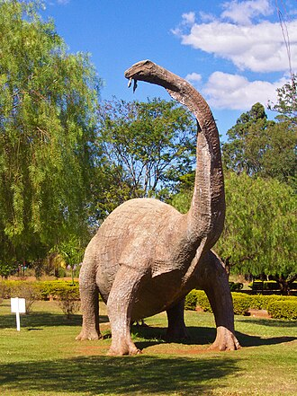

Centro de Pesquisas Paleontológicas Llewellyn Ivor Price
De TriânguloLeaks, a enciclopédia do Triângulo Mineiro
|
 CC BY-SA Foto de terceiros, via Wikimedia Commons — consulte a página do arquivo para o nome do autor e a versão exata da licença antes de reutilizar. Sobre o licenciamento. | |
| Resumo | |
|---|---|
| Centro de pesquisa paleontológica e museu público vinculados à UFTM, no distrito de Peirópolis, Uberaba — popularmente conhecido como "Museu dos Dinossauros". | |
| Dados | |
| Tipo | Centro de pesquisa e museu público universitário |
| Nome popular | Museu dos Dinossauros de Peirópolis |
| Criação | 1992 |
| Vinculação | Universidade Federal do Triângulo Mineiro (UFTM) |
| Integra | Complexo Cultural e Científico de Peirópolis (CCCP), criado em 2010 |
| Sede | Peirópolis, distrito de Uberaba, Minas Gerais |
{kind=link}
O Centro de Pesquisas Paleontológicas Llewellyn Ivor Price, popularmente conhecido como Museu dos Dinossauros, é um centro de pesquisa e museu público criado em 1992 no distrito de Peirópolis, em Uberaba, vinculado à Universidade Federal do Triângulo Mineiro (UFTM). Batizado em homenagem ao paleontólogo Llewellyn Ivor Price, reúne o acervo resultante de décadas de escavações nos afloramentos fossilíferos do Cretáceo Superior da região.[1]
Origem: as escavações de Price em Peirópolis [editar]
Origem: as escavações de Price em Peirópolis [editar]
As escavações paleontológicas sistemáticas em Peirópolis começaram em 1946, conduzidas anualmente por Llewellyn Ivor Price até 1974, revelando um dos sítios fossilíferos mais importantes do Brasil, com depósitos datados de cerca de 83 a 66 milhões de anos, no Cretáceo Superior. O sítio inclui répteis diversos, entre eles dinossauros titanossauros, crocodilomorfos, tartarugas e outros vertebrados fósseis.[1][2]
Criação do centro e do museu [editar]
Criação do centro e do museu [editar]
Em reconhecimento ao trabalho de Price, o centro de pesquisa e o museu que hoje ocupam o distrito foram criados em 1992, recebendo o nome do paleontólogo. Em 2010, o conjunto de instalações — que reúne o centro de pesquisa, o museu, uma antiga estação ferroviária restaurada e outras estruturas — foi organizado sob o nome de Complexo Cultural e Científico de Peirópolis (CCCP), vinculado à Pró-Reitoria de Extensão, Cultura e Esporte da UFTM, tornando-se um centro de referência nacional em paleontologia.[2]
Acervo e visitação [editar]
Acervo e visitação [editar]
O acervo científico do centro reúne cerca de 1.500 fósseis catalogados, principalmente do Cretáceo Superior. O museu, aberto à visitação pública, já recebeu mais de um milhão de visitantes, oriundos de cerca de 1.210 municípios brasileiros e 44 países, e recebe hoje algo em torno de 40 mil visitantes por ano, entre cientistas, estudantes e turistas. Além da pesquisa científica, o centro desenvolve atividades de ensino, com participação de estudantes de graduação, pós-graduação e da educação básica em escavações, trabalho de laboratório e exposições.[2]
Localização [editar]
Localização [editar]
Local principal ou mencionado neste artigo: Centro de Pesquisas Paleontológicas Llewellyn Ivor Price, Peirópolis, Uberaba, Minas Gerais.
Ver também
Referências
- ↑ Complexo Cultural e Científico de Peirópolis (CCCP). "Centro de Pesquisas Paleontológicas Llewellyn Ivor Price". UFTM — usado para o histórico das escavações (1946–1974) e a datação do sítio. uftm.edu.br/proext/cccp.
- ↑ Complexo Cultural e Científico de Peirópolis (CCCP). UFTM — usado para a criação do centro (1992), a criação do CCCP (2010), o acervo e os dados de visitação. uftm.edu.br/proext/cccp.